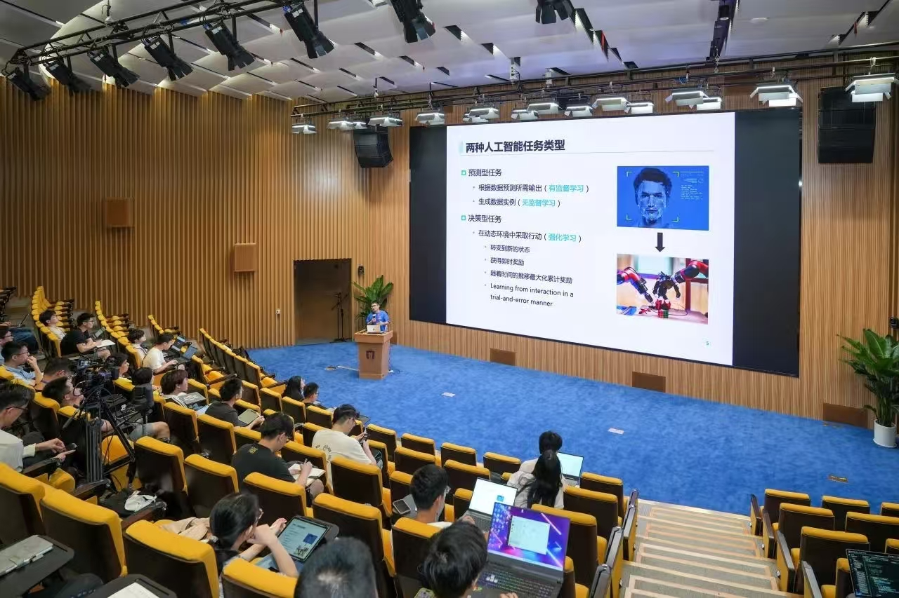
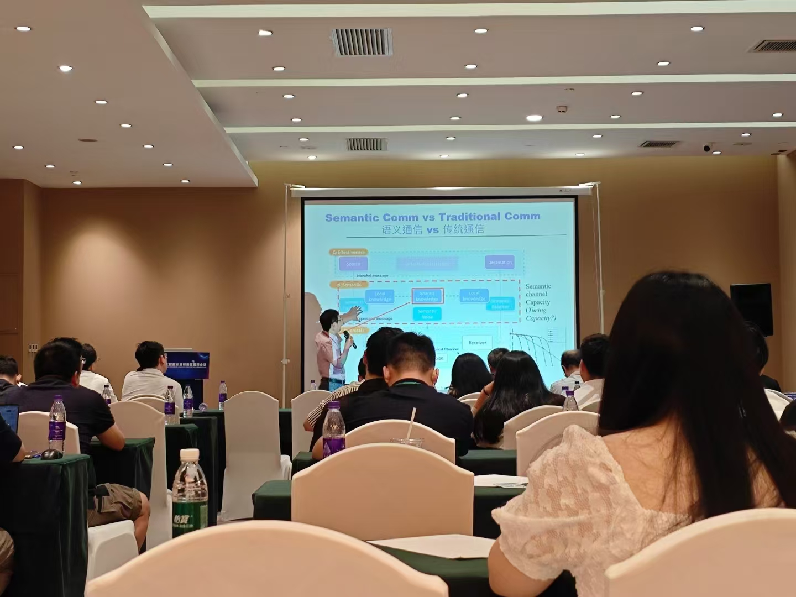
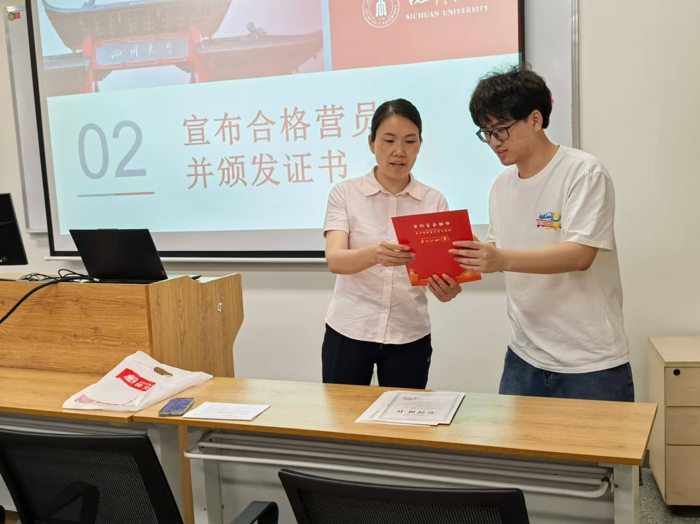
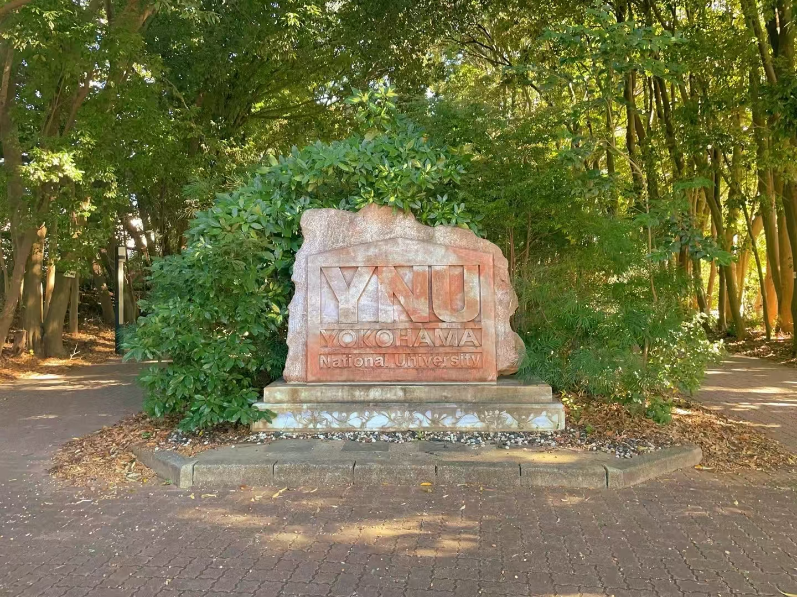
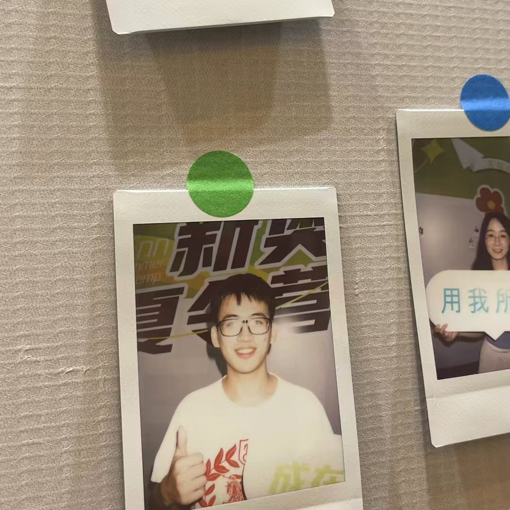
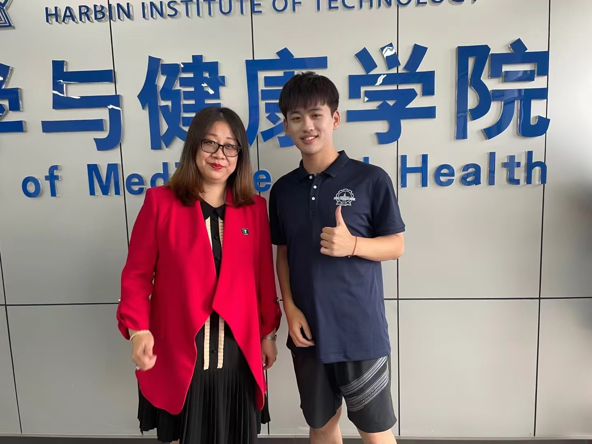
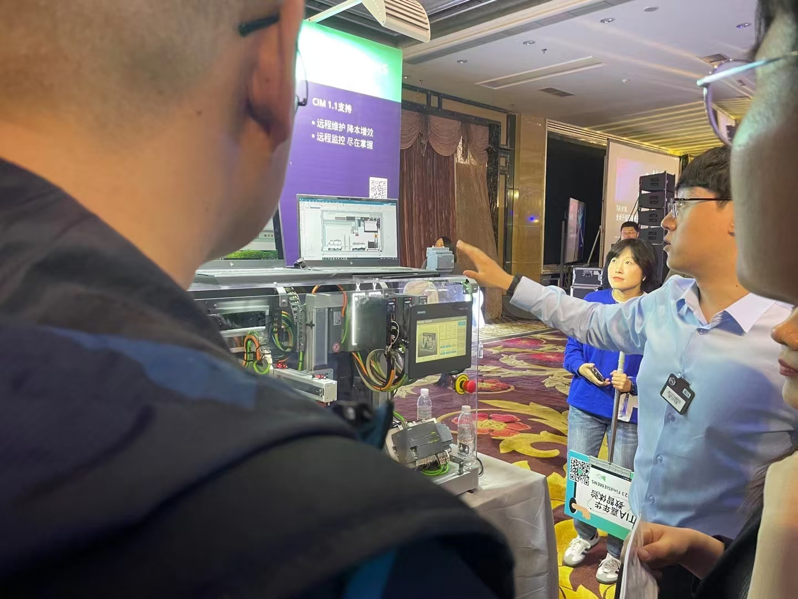
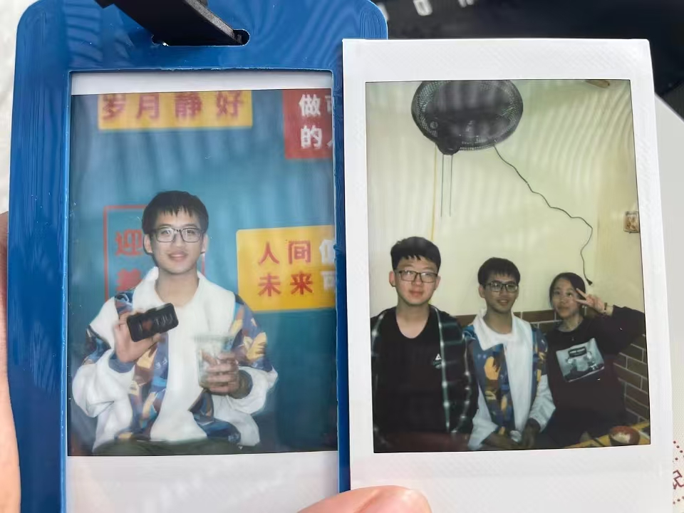
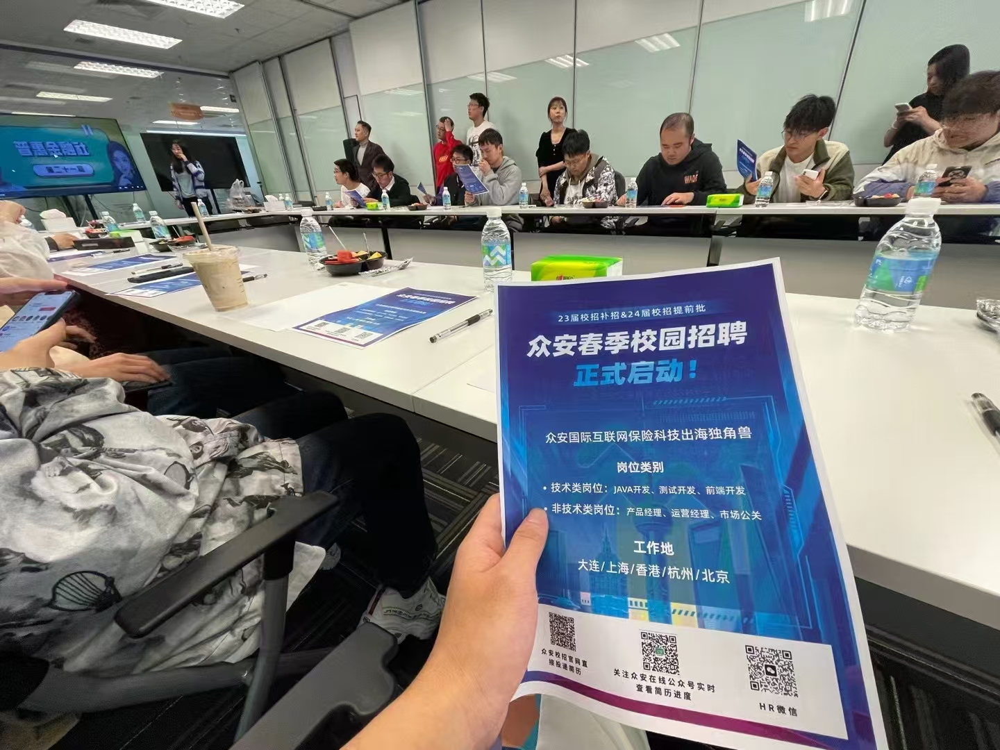

2024.10

前往广东广州，参观香港科技大学（广州），参加RLChina2024论坛。
2024.08

前往大连市凯宾斯基酒店，参加BigData2024学术会议。
2024.07

前往四川成都，参加四川大学计算机学院夏令营。
2023.12

前往日本神奈川县横滨市，参观访学横滨国立大学。
2023.09

前往河北廊坊，参加新奥集团2024年夏令营。
2023.07

前往黑龙江哈尔滨，参加哈尔滨工业大学2023年医学与健康学院暑期夏令营，结识了王诗琪老师等人。
2023.05

前往大连市大连亿峰捌号酒店，参加西门子TIA嘉年华大连站。
2023.04

前往天津市，参观天津大学，与孙嘉彤老师和张鹏老师会晤。
2023.04

前往大连市大连软件园，参观罗克韦尔自动化等企业。